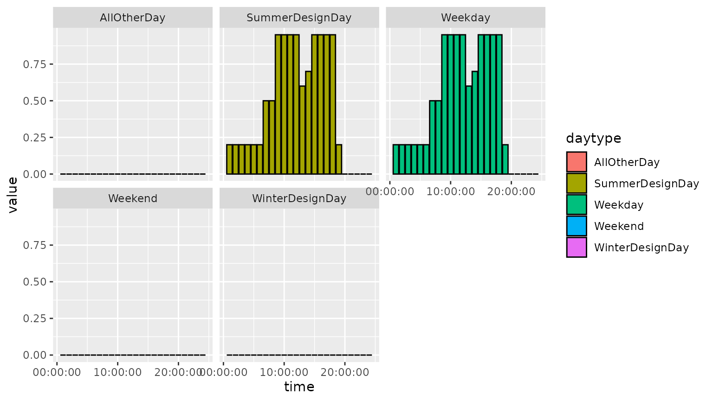

vignettes/schedule.Rmd
schedule.RmdSchedule:Compact class
Schedule:Compact class is quite commonly used in EnergyPlus models. Unlike other classes in EnergyPlus, it is quite flexible in value specifications and does not follow the usual definitions for fields. Starting from Field 1, the number of fields and positions are not set, and cannot really be described in the usual Field # manner.
path_idf <- system.file("extdata/1ZoneUncontrolled.idf", package = "eplusr")
idf <- read_idf(path_idf)
#> IDD v8.8.0 has not been parsed before.
#> Try to locate 'Energy+.idd' in EnergyPlus v8.8.0 installation folder '/usr/local/EnergyPlus-8-8-0'.
#> IDD file found: '/usr/local/EnergyPlus-8-8-0/Energy+.idd'.
#> Start parsing...
#> Parsing completed.
idf$definition("Schedule:Compact")
#> <IddObject: 'Schedule:Compact'>
#> ── MEMO ────────────────────────────────────────────────────────────────────────
#> "Irregular object. Does not follow the usual definition for fields. Fields A3... are:
#> Through: Date
#> For: Applicable days (ref: Schedule:Week:Compact)
#> Interpolate: Yes/No (ref: Schedule:Day:Interval) -- optional, if not used will be "No"
#> Until: <Time> (ref: Schedule:Day:Interval)
#> <numeric value>
#> words "Through","For","Interpolate","Until" must be included."
#>
#> ── PROPERTIES ──────────────────────────────────────────────────────────────────
#> * Group: 'Schedules'
#> * Unique: FALSE
#> * Required: FALSE
#> * Total fields: 4500
#>
#> ── FIELDS ──────────────────────────────────────────────────────────────────────
#> 1*: Name
#> 2 : Schedule Type Limits Name
#> 3 : Field 1 <↓>
#> ......Thus, starting from the 3rd field, all fields in Schedule:Compact class are tagged as “alpha” (string) in IDD.
unique(idf$definition("Schedule:Compact")$field_type()[-(1:2)])
#> [1] "alpha"This makes it hard to add, modify, extract and validate schedule values solely based its definitions. For example, an empty Schedule:Compact object is still “valid”, even through it does not contain any schedule data.
sch <- idf$add(Schedule_Compact = list("sch"))[[1L]]
sch
#> <IdfObject: 'Schedule:Compact'> [ID:54] `sch`
#> Class: <Schedule:Compact>
#> ├─ 1*: "sch", !- Name
#> │─ 2 : <"Blank">, !- Schedule Type Limits Name
#> │─ 3 : <"Blank">, !- Field 1
#> │─ 4 : <"Blank">, !- Field 2
#> └─ 5 : <"Blank">; !- Field 3
sch$validate()
#> ✔ No error found.Wrong schedule specifications cannot directly be caught by IdfObject$validate() since all fields are treated as arbitrary strings.
sch$set(..3 = "Through: -1")
#> <IdfObject: 'Schedule:Compact'> [ID:54] `sch`
#> Class: <Schedule:Compact>
#> ├─ 1*: "sch", !- Name
#> │─ 2 : <"Blank">, !- Schedule Type Limits Name
#> │─ 3 : "Through: -1", !- Field 1
#> │─ 4 : <"Blank">, !- Field 2
#> └─ 5 : <"Blank">; !- Field 3
sch$validate()
#> ✔ No error found.Moreover, every field value should be given as a string, even for schedule values.
sch$set(..3 = "Through: 12/31", ..4 = "For: AllDays", ..5 = "Until: 24:00", ..6 = 1.0)
#> Error: Failed to set object(s).
#>
#> ✖ [1] Errors found during validation.
#> ══════════════════════════════════════════════════════════════════════════════
#>
#> ── [1] Invalid Character ─────────────────────────────────────────────────────
#> Fields below should be characters but are not:
#>
#> Class: <Schedule:Compact>
#> └─ Object [ID:54] <sch>
#> └─ 6: "1"; !- Field 4
#> As a result, the output from $value() and $to_table() method is not very useful.
sch$set(..3 = "Through: 12/31", ..4 = "For: AllDays", ..5 = "Until: 24:00", ..6 = "1.0")
#> <IdfObject: 'Schedule:Compact'> [ID:54] `sch`
#> Class: <Schedule:Compact>
#> ├─ 1*: "sch", !- Name
#> │─ 2 : <"Blank">, !- Schedule Type Limits Name
#> │─ 3 : "Through: 12/31", !- Field 1
#> │─ 4 : "For: AllDays", !- Field 2
#> │─ 5 : "Until: 24:00", !- Field 3
#> └─ 6 : "1.0"; !- Field 4
sch$value()
#> $Name
#> [1] "sch"
#>
#> $`Schedule Type Limits Name`
#> [1] NA
#>
#> $`Field 1`
#> [1] "Through: 12/31"
#>
#> $`Field 2`
#> [1] "For: AllDays"
#>
#> $`Field 3`
#> [1] "Until: 24:00"
#>
#> $`Field 4`
#> [1] "1.0"
print(sch$to_table())
#> id name class index field value
#> 1: 54 sch Schedule:Compact 1 Name sch
#> 2: 54 sch Schedule:Compact 2 Schedule Type Limits Name <NA>
#> 3: 54 sch Schedule:Compact 3 Field 1 Through: 12/31
#> 4: 54 sch Schedule:Compact 4 Field 2 For: AllDays
#> 5: 54 sch Schedule:Compact 5 Field 3 Until: 24:00
#> 6: 54 sch Schedule:Compact 6 Field 4 1.0IdfScheduleCompact class
In order to solve this inconvenience, eplusr introduces a new IdfScheduleCompact class which is designed to ease the processing of Schedule:Compact objects. A short description of the core methods is given below.
| Method | Functionality |
|---|---|
$type_limits() |
Get or set schedule type limit |
$set() |
Modify schedule values using list input |
$update() |
Modify schedule values using data.frame input |
$validate() |
Check any errors in the schedule |
$is_valid() |
Check if no error exists in the schedule |
$extract() |
Extract schedule values in a data.table |
Note that IdfScheduleCompact class inherits IdfObject class, which means that methods available for an IdfObject object are still available for an IdfScheduleCompact object.
IdfScheduleCompact object
To create an IdfScheduleCompact object from an existing Schedule:Compact object, you can use the schedule_compact() constructor.
schedule_compact(parent = idf, name = "sch")
#> <IdfObject: 'Schedule:Compact'> [ID:54] `sch`
#> Class: <Schedule:Compact>
#> ├─ 1*: "sch", !- Name
#> │─ 2 : <"Blank">, !- Schedule Type Limits Name
#> │─ 3 : "Through: 12/31", !- Field 1
#> │─ 4 : "For: AllDays", !- Field 2
#> │─ 5 : "Until: 24:00", !- Field 3
#> └─ 6 : "1.0"; !- Field 4To directly create a new Schedule:Compact object in the parent Idf, set new to TRUE.
sch <- schedule_compact(idf, "sch1", new = TRUE)
print(sch)
#> <IdfObject: 'Schedule:Compact'> [ID:55] `sch1`
#> Class: <Schedule:Compact>
#> ├─ 1*: "sch1", !- Name
#> │─ 2 : <"Blank">, !- Schedule Type Limits Name
#> │─ 3 : <"Blank">, !- Field 1
#> │─ 4 : <"Blank">, !- Field 2
#> └─ 5 : <"Blank">; !- Field 3$type_limits() is used to get the type limits of a schedule. It will be used to validate the schedule values to make sure they do not exceed the range specified. $type_limits() gives NULL if no type limits have been set yet.
(sch$type_limits())
#> Schedule Type Limits have not been set yet.
#> NULLTo set the type limits, direct give the name of an existing ScheduleTypeLimits object.
idf$object_name("ScheduleTypeLimits")
#> $ScheduleTypeLimits
#> [1] "Fraction" "On/Off"
sch$type_limits("fraction")
#> $name
#> [1] "Fraction"
#>
#> $range
#> [0, 1]The $set() method provides a flexible interface to modify schedule values using lists:
c(...) at the LHS of :=
list(...) at the RHS..H or "HH:MM".Please note that currently
$set()does not support specifying theThrough:fields andInterpolate:fields. All schedules will be applied for all days in a year (.i.e.Through: 12/31). For detailed modifications, please use$update()method which will be described later. For now, neither$set()nor$update()supports interpolation specifications.Interpolate: Nois assumed for all input. However,IdfScheduleCompactdoes support otherInterpolateoption when parsing and data extraction using$extract().
sch$set(c("weekday", "summerdesignday") := list(
..6 = 0.2, "8:00" = 0.5,
..12 = 0.95, "13:30" = 0.6, ..14 = 0.8,
..18 = 0.95, ..19 = 0.2, ..24 = 0),
allotherday = list(..24 = 0),
.check_range = FALSE
)
#> <IdfObject: 'Schedule:Compact'> [ID:55] `sch1`
#> Class: <Schedule:Compact>
#> ├─ 01*: "sch1", !- Name
#> │─ 02 : "Fraction", !- Schedule Type Limits Name
#> │─ 03 : "Through: 12/31", !- Field 1
#> │─ 04 : "For: Weekdays SummerDesignDay", !- Field 2
#> │─ 05 : "Until: 06:00", !- Field 3
#> │─ 06 : "0.2", !- Field 4
#> │─ 07 : "Until: 08:00", !- Field 5
#> │─ 08 : "0.5", !- Field 6
#> │─ 09 : "Until: 12:00", !- Field 7
#> │─ 10 : "0.95", !- Field 8
#> │─ 11 : "Until: 13:30", !- Field 9
#> │─ 12 : "0.6", !- Field 10
#> │─ 13 : "Until: 14:00", !- Field 11
#> │─ 14 : "0.8", !- Field 12
#> │─ 15 : "Until: 18:00", !- Field 13
#> │─ 16 : "0.95", !- Field 14
#> │─ 17 : "Until: 19:00", !- Field 15
#> │─ 18 : "0.2", !- Field 16
#> │─ 19 : "Until: 24:00", !- Field 17
#> │─ 20 : "0", !- Field 18
#> │─ 21 : "For: AllOtherDays",!- Field 19
#> │─ 22 : "Until: 24:00", !- Field 20
#> └─ 23 : "0"; !- Field 21If schedule type limit is set, you can set .check_range to TRUE to validate schedule values during modification.
sch$set(allday = list(..24 = 2), .check_range = TRUE)
#> Error: Invalid schedule value found ('2'). Should be in range [0, 1] as defined in ScheduleTypeLimits 'Fraction'.You can also use $validate() and $is_valid() method to check existing schedule values.
sch$validate()
#> ✔ No error found.
sch$is_valid()
#> [1] TRUEThe $update() method takes a data.frame and modify schedule values accordingly. It is designed to work together with $extract() method which will be described later. The input data.frame of $upate() should contain at least 4 columns:
year_day: Used for the Through: fields. Can be in one of the following formats:
character: Day specifications in either mm/dd or mm-dd where mm is the month in 1:12 or in character and dd is the day in month in 1:31
Date: The year component will be ignored and only the month and day component will be usedinteger: Julian day, e.g. 360, 365 and etc.id (Optional): Integer type. Used to group together different day types with same schedule values. Grouped day types will be compacted in a single For: field, e.g. For: Weekdays SummaryDesignDay. Grouped day types should have the same schedule values. Otherwise an error will be issued.daytype: Character type. Used for the For: fields. All possible values are listed below. Case-insensitive matching is used. Different day types can be grouped using the id column mentioned above, or put together directly in a single string separate by a comma (,), e.g. "weekend, holiday".
"AllDay(s)""Weekday(s)", and also "Monday", "Tuesday", "Wednesday", "Thursday" and "Friday"
"Weekend(s)", and also "Saturday" and "Sunday"
"SummaryDesignDay" and "WinterDesignDay"
"Holiday""CustomDay1" and "CustomDay2"
"AllOtherDay(s)"time: Used for the Until: fields. Can be in one of the following formats:
character: Time specifications in HH:MM where HH is the hour in 0:24 and MM is the minute in 0:60
integer: Time differences from 00:00:00 in minutes, e.g. seq(60, 60 * 24, by = 60)
hms: hms objects constructed using hms::hms() or equivalents, e.g. hms::hms(minutes = 30, hours = 1), and hms::as_hms("1:30:00")
difftime: difftime objects constructed using as.difftime() or equivalents, e.g. as.difftime(1:24, units = "hours")
ITime: ITime objects constructed using data.table::as.ITime(), e.g. as.ITime("01:30:00")
value: Numeric type. Used for the actual schedule values
val1 <- data.table::data.table(year_day = "12/31",
daytype = "weekday, summerdesignday",
time = c("6:00", "7:00", "8:00", "12:00", "13:30", "14:00", "18:00", "19:00", "24:00"),
value = c(0.2, 0.5, 0.5, 0.95, 0.6, 0.8, 0.95, 0.2, 0.0)
)
val2 <- data.table::data.table(year_day = "12/31", daytype = "allotherday", time = "24:00", value = 0.0)
val <- data.table::rbindlist(list(val1, val2))
val
#> year_day daytype time value
#> 1: 12/31 weekday, summerdesignday 6:00 0.20
#> 2: 12/31 weekday, summerdesignday 7:00 0.50
#> 3: 12/31 weekday, summerdesignday 8:00 0.50
#> 4: 12/31 weekday, summerdesignday 12:00 0.95
#> 5: 12/31 weekday, summerdesignday 13:30 0.60
#> 6: 12/31 weekday, summerdesignday 14:00 0.80
#> 7: 12/31 weekday, summerdesignday 18:00 0.95
#> 8: 12/31 weekday, summerdesignday 19:00 0.20
#> 9: 12/31 weekday, summerdesignday 24:00 0.00
#> 10: 12/31 allotherday 24:00 0.00
sch$update(val, check_range = TRUE)
#> <IdfObject: 'Schedule:Compact'> [ID:55] `sch1`
#> Class: <Schedule:Compact>
#> ├─ 01*: "sch1", !- Name
#> │─ 02 : "Fraction", !- Schedule Type Limits Name
#> │─ 03 : "Through: 12/31", !- Field 1
#> │─ 04 : "For: Weekdays SummerDesignDay", !- Field 2
#> │─ 05 : "Until: 06:00", !- Field 3
#> │─ 06 : "0.2", !- Field 4
#> │─ 07 : "Until: 07:00", !- Field 5
#> │─ 08 : "0.5", !- Field 6
#> │─ 09 : "Until: 08:00", !- Field 7
#> │─ 10 : "0.5", !- Field 8
#> │─ 11 : "Until: 12:00", !- Field 9
#> │─ 12 : "0.95", !- Field 10
#> │─ 13 : "Until: 13:30", !- Field 11
#> │─ 14 : "0.6", !- Field 12
#> │─ 15 : "Until: 14:00", !- Field 13
#> │─ 16 : "0.8", !- Field 14
#> │─ 17 : "Until: 18:00", !- Field 15
#> │─ 18 : "0.95", !- Field 16
#> │─ 19 : "Until: 19:00", !- Field 17
#> │─ 20 : "0.2", !- Field 18
#> │─ 21 : "Until: 24:00", !- Field 19
#> │─ 22 : "0", !- Field 20
#> │─ 23 : "For: AllOtherDays",!- Field 21
#> │─ 24 : "Until: 24:00", !- Field 22
#> └─ 25 : "0"; !- Field 23Most of the time, we will be dealing with existing schedules instead of creating new ones from scratch. It would be quite handy if we could extract schedule data of given day types and time step. The $extract() is designed for this. It extracts schedule data into a data.table with 5 columns:
year_day: Character type. Used for the Through: fields. Day specifications in mm/dd format.id: Integer type. The group index of day types.daytype: Character type. Used for the For: fields. Note that all trailing s are removed, e.g. AllDays and Weekdays become AllDay and Weekday, respectively.time: hms vector. Used for the Until: fields.value: Numeric type. Actual schedule values.
print(sch$extract())
#> year_day id daytype time value
#> 1: 12/31 1 Weekday,SummerDesignDay 06:00:00 0.20
#> 2: 12/31 1 Weekday,SummerDesignDay 07:00:00 0.50
#> 3: 12/31 1 Weekday,SummerDesignDay 08:00:00 0.50
#> 4: 12/31 1 Weekday,SummerDesignDay 12:00:00 0.95
#> 5: 12/31 1 Weekday,SummerDesignDay 13:30:00 0.60
#> 6: 12/31 1 Weekday,SummerDesignDay 14:00:00 0.80
#> 7: 12/31 1 Weekday,SummerDesignDay 18:00:00 0.95
#> 8: 12/31 1 Weekday,SummerDesignDay 19:00:00 0.20
#> 9: 12/31 1 Weekday,SummerDesignDay 24:00:00 0.00
#> 10: 12/31 2 AllOtherDay 24:00:00 0.00By default, grouped day types are concatenated together using ,. The compacted day types, e.g. Weekday and AllOtherDay are kept. If you want to expand all possible day types, set daytype to TRUE or "expand". This becomes handy when you want to specifically extract data of a certain day type.
We can see from the following table that all 12 day types are extracted, with the id column showing their original group.
print(sch$extract(daytype = TRUE))
#> year_day id daytype time value
#> 1: 12/31 1 Monday 06:00:00 0.20
#> 2: 12/31 1 Monday 07:00:00 0.50
#> 3: 12/31 1 Monday 08:00:00 0.50
#> 4: 12/31 1 Monday 12:00:00 0.95
#> 5: 12/31 1 Monday 13:30:00 0.60
#> 6: 12/31 1 Monday 14:00:00 0.80
#> 7: 12/31 1 Monday 18:00:00 0.95
#> 8: 12/31 1 Monday 19:00:00 0.20
#> 9: 12/31 1 Monday 24:00:00 0.00
#> 10: 12/31 1 Tuesday 06:00:00 0.20
#> 11: 12/31 1 Tuesday 07:00:00 0.50
#> 12: 12/31 1 Tuesday 08:00:00 0.50
#> 13: 12/31 1 Tuesday 12:00:00 0.95
#> 14: 12/31 1 Tuesday 13:30:00 0.60
#> 15: 12/31 1 Tuesday 14:00:00 0.80
#> 16: 12/31 1 Tuesday 18:00:00 0.95
#> 17: 12/31 1 Tuesday 19:00:00 0.20
#> 18: 12/31 1 Tuesday 24:00:00 0.00
#> 19: 12/31 1 Wednesday 06:00:00 0.20
#> 20: 12/31 1 Wednesday 07:00:00 0.50
#> 21: 12/31 1 Wednesday 08:00:00 0.50
#> 22: 12/31 1 Wednesday 12:00:00 0.95
#> 23: 12/31 1 Wednesday 13:30:00 0.60
#> 24: 12/31 1 Wednesday 14:00:00 0.80
#> 25: 12/31 1 Wednesday 18:00:00 0.95
#> 26: 12/31 1 Wednesday 19:00:00 0.20
#> 27: 12/31 1 Wednesday 24:00:00 0.00
#> 28: 12/31 1 Thursday 06:00:00 0.20
#> 29: 12/31 1 Thursday 07:00:00 0.50
#> 30: 12/31 1 Thursday 08:00:00 0.50
#> 31: 12/31 1 Thursday 12:00:00 0.95
#> 32: 12/31 1 Thursday 13:30:00 0.60
#> 33: 12/31 1 Thursday 14:00:00 0.80
#> 34: 12/31 1 Thursday 18:00:00 0.95
#> 35: 12/31 1 Thursday 19:00:00 0.20
#> 36: 12/31 1 Thursday 24:00:00 0.00
#> 37: 12/31 1 Friday 06:00:00 0.20
#> 38: 12/31 1 Friday 07:00:00 0.50
#> 39: 12/31 1 Friday 08:00:00 0.50
....
# OR sch$extract(daytype = "expand")If you want to compact day types with same schedule values, set daytype to FALSE or "compact". It will try to group weekdays into Weekday, weekends into Weekend, and put all CustomDay1, CustomDay2 and Holiday into AllOtherDay, if possible. This is because, for most of the time, Weekday, Weekend, design days including SummerDesignDay and WinterDesignDay are the most commonly used day types. Please note that if it is not possible to compact those day types, for instance, schedules of Monday and Friday are different, the original day types are kept and no compact day types will be made.
For this specific schedule, we can see from the following table that the original AllOtherDay has been divided into 3, i.e. Weekend, WinterDesignDay and AllOtherDay.
print(sch$extract(daytype = FALSE))
#> year_day id daytype time value
#> 1: 12/31 1 Weekday 06:00:00 0.20
#> 2: 12/31 1 Weekday 07:00:00 0.50
#> 3: 12/31 1 Weekday 08:00:00 0.50
#> 4: 12/31 1 Weekday 12:00:00 0.95
#> 5: 12/31 1 Weekday 13:30:00 0.60
#> 6: 12/31 1 Weekday 14:00:00 0.80
#> 7: 12/31 1 Weekday 18:00:00 0.95
#> 8: 12/31 1 Weekday 19:00:00 0.20
#> 9: 12/31 1 Weekday 24:00:00 0.00
#> 10: 12/31 1 SummerDesignDay 06:00:00 0.20
#> 11: 12/31 1 SummerDesignDay 07:00:00 0.50
#> 12: 12/31 1 SummerDesignDay 08:00:00 0.50
#> 13: 12/31 1 SummerDesignDay 12:00:00 0.95
#> 14: 12/31 1 SummerDesignDay 13:30:00 0.60
#> 15: 12/31 1 SummerDesignDay 14:00:00 0.80
#> 16: 12/31 1 SummerDesignDay 18:00:00 0.95
#> 17: 12/31 1 SummerDesignDay 19:00:00 0.20
#> 18: 12/31 1 SummerDesignDay 24:00:00 0.00
#> 19: 12/31 2 Weekend 24:00:00 0.00
#> 20: 12/31 2 WinterDesignDay 24:00:00 0.00
#> 21: 12/31 2 AllOtherDay 24:00:00 0.00
#> year_day id daytype time value
# OR sch$extract(daytype = "compact")If you want to specify your own grouped day types, you can directly pass a character vector to daytype. All other days except specified ones will be classified into AllOtherDay, if possible.
Let’s say we want to compact the weekdays, but keep the weekends separately. We can achieve it by:
print(sch$extract(c("weekday", "saturday", "sunday")))
#> year_day id daytype time value
#> 1: 12/31 1 Weekday 06:00:00 0.20
#> 2: 12/31 1 Weekday 07:00:00 0.50
#> 3: 12/31 1 Weekday 08:00:00 0.50
#> 4: 12/31 1 Weekday 12:00:00 0.95
#> 5: 12/31 1 Weekday 13:30:00 0.60
#> 6: 12/31 1 Weekday 14:00:00 0.80
#> 7: 12/31 1 Weekday 18:00:00 0.95
#> 8: 12/31 1 Weekday 19:00:00 0.20
#> 9: 12/31 1 Weekday 24:00:00 0.00
#> 10: 12/31 1 SummerDesignDay 06:00:00 0.20
#> 11: 12/31 1 SummerDesignDay 07:00:00 0.50
#> 12: 12/31 1 SummerDesignDay 08:00:00 0.50
#> 13: 12/31 1 SummerDesignDay 12:00:00 0.95
#> 14: 12/31 1 SummerDesignDay 13:30:00 0.60
#> 15: 12/31 1 SummerDesignDay 14:00:00 0.80
#> 16: 12/31 1 SummerDesignDay 18:00:00 0.95
#> 17: 12/31 1 SummerDesignDay 19:00:00 0.20
#> 18: 12/31 1 SummerDesignDay 24:00:00 0.00
#> 19: 12/31 2 Saturday 24:00:00 0.00
#> 20: 12/31 2 Sunday 24:00:00 0.00
#> 21: 12/31 2 AllOtherDay 24:00:00 0.00
#> year_day id daytype time valueIt is convenient to specify schedule values only at times when they change. However, it is useful to get schedule values at a given time step, e.g. 1-hour, especially when we try to visualize the schedule values.
You can achieve this by passing a time step specification to timestep.
print(sch$extract(timestep = "3 hour"))
#> year_day id daytype time value
#> 1: 12/31 1 Weekday,SummerDesignDay 03:00:00 0.20000000
#> 2: 12/31 1 Weekday,SummerDesignDay 06:00:00 0.20000000
#> 3: 12/31 1 Weekday,SummerDesignDay 09:00:00 0.65000000
#> 4: 12/31 1 Weekday,SummerDesignDay 12:00:00 0.95000000
#> 5: 12/31 1 Weekday,SummerDesignDay 15:00:00 0.75000000
#> 6: 12/31 1 Weekday,SummerDesignDay 18:00:00 0.95000000
#> 7: 12/31 1 Weekday,SummerDesignDay 21:00:00 0.06666667
#> 8: 12/31 1 Weekday,SummerDesignDay 24:00:00 0.00000000
#> 9: 12/31 2 AllOtherDay 03:00:00 0.00000000
#> 10: 12/31 2 AllOtherDay 06:00:00 0.00000000
#> 11: 12/31 2 AllOtherDay 09:00:00 0.00000000
#> 12: 12/31 2 AllOtherDay 12:00:00 0.00000000
#> 13: 12/31 2 AllOtherDay 15:00:00 0.00000000
#> 14: 12/31 2 AllOtherDay 18:00:00 0.00000000
#> 15: 12/31 2 AllOtherDay 21:00:00 0.00000000
#> 16: 12/31 2 AllOtherDay 24:00:00 0.00000000
print(sch$extract(timestep = "1 hour"))
#> year_day id daytype time value
#> 1: 12/31 1 Weekday,SummerDesignDay 01:00:00 0.20
#> 2: 12/31 1 Weekday,SummerDesignDay 02:00:00 0.20
#> 3: 12/31 1 Weekday,SummerDesignDay 03:00:00 0.20
#> 4: 12/31 1 Weekday,SummerDesignDay 04:00:00 0.20
#> 5: 12/31 1 Weekday,SummerDesignDay 05:00:00 0.20
#> 6: 12/31 1 Weekday,SummerDesignDay 06:00:00 0.20
#> 7: 12/31 1 Weekday,SummerDesignDay 07:00:00 0.50
#> 8: 12/31 1 Weekday,SummerDesignDay 08:00:00 0.50
#> 9: 12/31 1 Weekday,SummerDesignDay 09:00:00 0.95
#> 10: 12/31 1 Weekday,SummerDesignDay 10:00:00 0.95
#> 11: 12/31 1 Weekday,SummerDesignDay 11:00:00 0.95
#> 12: 12/31 1 Weekday,SummerDesignDay 12:00:00 0.95
#> 13: 12/31 1 Weekday,SummerDesignDay 13:00:00 0.60
#> 14: 12/31 1 Weekday,SummerDesignDay 14:00:00 0.70
#> 15: 12/31 1 Weekday,SummerDesignDay 15:00:00 0.95
#> 16: 12/31 1 Weekday,SummerDesignDay 16:00:00 0.95
#> 17: 12/31 1 Weekday,SummerDesignDay 17:00:00 0.95
#> 18: 12/31 1 Weekday,SummerDesignDay 18:00:00 0.95
#> 19: 12/31 1 Weekday,SummerDesignDay 19:00:00 0.20
#> 20: 12/31 1 Weekday,SummerDesignDay 20:00:00 0.00
#> 21: 12/31 1 Weekday,SummerDesignDay 21:00:00 0.00
#> 22: 12/31 1 Weekday,SummerDesignDay 22:00:00 0.00
#> 23: 12/31 1 Weekday,SummerDesignDay 23:00:00 0.00
#> 24: 12/31 1 Weekday,SummerDesignDay 24:00:00 0.00
#> 25: 12/31 2 AllOtherDay 01:00:00 0.00
#> 26: 12/31 2 AllOtherDay 02:00:00 0.00
#> 27: 12/31 2 AllOtherDay 03:00:00 0.00
#> 28: 12/31 2 AllOtherDay 04:00:00 0.00
#> 29: 12/31 2 AllOtherDay 05:00:00 0.00
#> 30: 12/31 2 AllOtherDay 06:00:00 0.00
#> 31: 12/31 2 AllOtherDay 07:00:00 0.00
#> 32: 12/31 2 AllOtherDay 08:00:00 0.00
#> 33: 12/31 2 AllOtherDay 09:00:00 0.00
#> 34: 12/31 2 AllOtherDay 10:00:00 0.00
#> 35: 12/31 2 AllOtherDay 11:00:00 0.00
#> 36: 12/31 2 AllOtherDay 12:00:00 0.00
#> 37: 12/31 2 AllOtherDay 13:00:00 0.00
#> 38: 12/31 2 AllOtherDay 14:00:00 0.00
#> 39: 12/31 2 AllOtherDay 15:00:00 0.00
....As described above, the time column is a hms vector. It is handy for plotting since hms object is directly supported by the scale system of ggplot2 package.
library(ggplot2)
ggplot(sch$extract(FALSE, "1 hour")) +
geom_col(aes(time, value, fill = daytype), color = "black") +
facet_wrap(~daytype)
If your schedule contains multiple time periods that have the same schedule value, you can compact the schedule times and values by setting timestep to "auto".
For this example, time periods 06:00 – 07:00 and 07:00 – 08:00 have the same schedule value (0.5). The following table has compact these 2 time periods together into one (06:00 – 08:00).
print(sch$extract(timestep = "auto"))
#> year_day id daytype time value
#> 1: 12/31 1 Weekday,SummerDesignDay 06:00:00 0.20
#> 2: 12/31 1 Weekday,SummerDesignDay 08:00:00 0.50
#> 3: 12/31 1 Weekday,SummerDesignDay 12:00:00 0.95
#> 4: 12/31 1 Weekday,SummerDesignDay 13:30:00 0.60
#> 5: 12/31 1 Weekday,SummerDesignDay 14:00:00 0.80
#> 6: 12/31 1 Weekday,SummerDesignDay 18:00:00 0.95
#> 7: 12/31 1 Weekday,SummerDesignDay 19:00:00 0.20
#> 8: 12/31 1 Weekday,SummerDesignDay 24:00:00 0.00
#> 9: 12/31 2 AllOtherDay 24:00:00 0.00